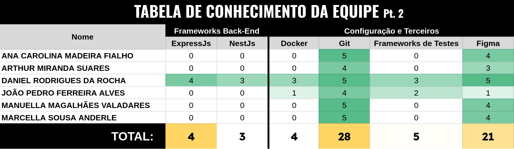

2. Solução Proposta
2.1. Objetivos do Produto
Primordialmente, o principal objetivo deste software é facilitar o acesso às informações institucionais e de Atendimento da Família do Sítio para os Usuários. Este objetivo será alcançado com a resolução das 5 Causas indicadas no Diagrama espinha de peixe, presente na Figura 1 da seção Cenário Atual do Cliente e Negócio:
- Blogs;
- Visitas Técnicas;
- Recrutamento;
- Institucional;
- Ouvidoria.
As causas acima foram identificadas como solucionáveis dentro de um produto de software. Com uma unificação dos serviços requeridos e do direcionamento dos feedbacks, é esperado que haja um fluxo melhor de informações, certificando-se de que elas cheguem onde devem chegar.
O resultado esperado é que com essa aplicação e as mudanças solicitadas, os clientes e visitantes do site tenham maiores opções de interação com os serviços ofertados pelo Café do Sítio, e que funcionários da empresa possam ter uma ferramenta de trabalho que os ajude a receber feedbacks direcionados para as áreas corretas, diminuindo a sobrecarga em apenas um dos setores. Tais resultados otimizam o tempo de resposta ao feedback, tarefa essencial para uma empresa interessada em manter uma boa reputação entre seus clientes e possíveis clientes.
2.2. Características da Solução
As características do aplicativo, preliminarmente, incluem:
-
O software irá ajudar o processo de aquisição de colaboradores qualificados para os diversos cargos na empresa através de uma interface que guiará o usuário, através dos procedimentos adequados e necessários para participar dos processos seletivos da empresa por meio da plataforma empregare.
-
O software deverá ter rotas diferentes para cada serviço com sua respectiva solução, incluindo os serviços de atendimento ao cliente, onde cada requisição do cliente à empresa deve ser enviada para o setor adequado a demanda desse cliente.
-
O software deverá ser adequado ao uso para um público não acostumado com tecnologia;
-
O software deverá permitir o rastreamento dos produtos do Café do Sítio, informando os comércios onde clientes da empresa poderão encontrar seus produtos;
-
O software deverá possibilitar a organização e agendamento de visitas técnicas, informando os funcionários sempre que houver novas solicitações e fornecer o melhor momento para a visita.
2.3. Tecnologias a Serem Utilizadas
As tecnologias preliminares para o desenvolvimento do software serão:
1. Front-end
1.1. HTML, CSS e JavaScript: essenciais para a construção da interface da nova página principal. Todos os membros da equipe possuem familiaridade com essas tecnologias.
1.2. React.js: Será usado para a criação de componentes dinâmicos e responsivos. Com um bom domínio de React Native na equipe, o framework React.js será uma escolha natural para o frontend.
2. Back-end
2.1. Node.js: Com um nível razoável de conhecimento entre os desenvolvedores, o Node.js será o framework central para o desenvolvimento da API do sistema.
2.2. Express.js: Será considerado para suporte em rotas mais simples e leves, dada a familiaridade da equipe com o framework.
3. Banco de Dados
3.1. MongoDB: Considerado uma ferramenta fácil de aprender a curto prazo, o MongoDB será utilizado neste projeto, pois atende às necessidades do cliente.
4. Configuração e Terceiros
4.1. Git: Para controle de versão e colaboração eficiente no código, aproveitando o bom nível de conhecimento da equipe em Git.
4.2. GitHub Pages: Será utilizado para a documentação do software, facilitando o processo de deploy.
5. Ferramentas de Teste
5.1. Jest: Será usado para garantir a qualidade e a confiabilidade do código através de testes unitários. A equipe possui competência moderada em frameworks de teste, o que torna o Jest uma boa opção para iniciar os testes automatizados.
6. Design
6.1. Figma: Para a prototipação e criação de interfaces amigáveis e interativas, facilitando a comunicação com o cliente sobre o design da nova página principal.
2.4. Pesquisa de Mercado e Análise Competitiva
No mercado atual, existem diversas soluções que atendem à necessidade de gestão de atendimento ao cliente, como plataformas de CRM e ferramentas de agendamento e reclamações. Entre os principais concorrentes estão grandes players como o Zendesk (amplamente utilizado para centralização de atendimento ao cliente), além de soluções mais acessíveis para empresas menores, como Trello para gerenciamento de solicitações e Google Forms para captação de feedbacks e reclamações. Contudo, essas plataformas não se integram perfeitamente com as operações específicas do Café do Sítio e podem apresentar limitações no controle de dados e personalização, além de exigir a adaptação a diversos sistemas desconectados, Devido à terceirização de softwares em diversos contextos mencionados, os funcionários frequentemente precisam aprender a utilizar diferentes plataformas, com constantes atualizações e, muitas vezes, sem um padrão visual ou alinhamento com a identidade da marca. Dessa forma, uma plataforma que integre essas funcionalidades se torna essencial para fortalecer a cultura organizacional e promover uma identidade visual consistente em todas as ferramentas utilizadas.
A nossa solução proposta para a Família do Sítio se diferencia por oferecer uma plataforma única e personalizada, porque plataforma proporcionará um sistema completo de cadastro de visitas, um espaço aberto para ouvidoria voltado aos clientes e uma interface própria para recrutamentos, afim de guiar como a aplicação deverá acontecer dentro do software Empregare. Além disso, incluirá uma aplicação que encaminhará as requisições dos clientes diretamente para o setor correspondente, completamente integrada ao site da empresa. Ao contrário de soluções genéricas, o sistema desenvolvido será moldado para as necessidades específicas da empresa, centralizando o atendimento em uma única interface e automatizando processos internos de forma a reduzir falhas humanas e aumentar a eficiência operacional. Além disso, a personalização do design e funcionalidades permitirá uma experiência de usuário mais fluida, isto é, os menus dos produtos e caminhos de navegação organizados de modo hierárquico, para que o usuário encontre rapidamente as informações e ações desejadas, utilizar carregamento assíncrono de dados para evitar recargas de página completas ao buscar informações em tempo real, fazer uso de transições visuais (como animações sutis ao trocar de tela) para indicar mudanças de estado e orientar o usuário sobre o que está acontecendo e implementar preenchimento automático de campos e sugestões com base em entradas anteriores para otimizar o tempo do usuário. Dessa maneira, a nossa solução irá refletir os valores e a identidade visual da Família do Sítio, algo que as soluções concorrentes padronizadas não conseguem oferecer. A combinação de automação, centralização e integração diretamente com o site coloca a solução em vantagem competitiva ao oferecer um atendimento mais ágil e eficaz para os diferentes públicos da empresa.
2.5. Análise de Viabilidade:
A viabilidade do projeto é alta, considerando as tecnologias e o nível de complexidade. Baseando-se em uma planilha de conhecimento levantada, a tecnologia adotada neste projeto: ReactJs, que usa Javascript como linguagem base estão entre os maiores conhecimentos dentro da equipe de desenvolvimento, tal como é ilustrado na Figura 1.1, na parte de frameworks Front-End.
Já para a parte do Back-end, será utilizado as ferramentas consideradas fáceis para a curva de aprendizagem, visto que grande parte da equipe não possui experiências com essa área, como visto na Figura 1.2. Adotando ExpressJs com NodeJs, e MongoDB, a aplicação em paralelo à fase de aprendizagem será melhor para a equipe de desenvolvimento e mais rápida.
O prazo estimado é de três meses, dividido a produção das features em ciclos quinzenais, cujo estará reservado para as entregas na produção ao cliente. A cada quinze dias, as entregas serão validadas pelo cliente e haverá ajustes rápidos em caso de correções. O cronograma é viável, visto que o time já possui um conhecimento consolidado nas ferramentas de criação da interface e, o escopo compartilha de uma complexidade que permite o treinamento em tecnologias necessárias ao longo de seu desenvolvimento.


2.6. Impacto da Solução:
A implementação da nova plataforma de atendimento ao cliente da Família do Sítio possibilitará que os setores de trabalho não ajam como intermediadores de reclamações que foram mal direcionadas, onde no caso essas reclamações vindas do cliente final iriam direto ao setor envolvido. Facilitará o agendamento de visitas físicas à fábrica ao proporcionar um sistema de agendamento que mostre aos clientes interessados os prazos e períodos disponíveis. Assim, essa solução impactará diretamente o funcionamento do negócio. O acesso fácil e a visualização rápida aos processos da Família do Sítio, além da a automação de tarefas que antes eram manuais vão proporcionar maior valocidade de atendimento e controle, melhorar a experiência dos clientes em seu processo de atendimento e otimizar a operação interna, descrita na seção 1.2. Os benefícios esperados são:
1. Melhoria na Eficiência Operacional:
A automação dos processos de recrutamento, agendamento de visitas técnicas e gestão de reclamações reduzirá a carga de trabalho manual dos funcionários, minimizando erros e otimizando o tempo da equipe. Isso permitirá que o setor de atendimento se concentre em tarefas de maior valor estratégico.
2. Aumento da Satisfação dos Clientes:
Com uma interface integrada, ou seja, um site principal que permita o registro de reclamações, agendamento de visitas técnicas e rastreamento de produtos da Família do Sítio, e construídos na página de modo à atender ao público mais leigo (Não utilizam frequentemente aparelhos tecnológicos), garantindo que independentemente da demanda, tenham tempos de atendimento semelhantes, e transparência, já que o próprio software poderá responder as requisições do público externo à Família do Sítio, resultará em uma experiência mais positiva e de maior fidelização.
3. Maior Controle e Transparência nos Processos:
O sistema permitirá um acompanhamento mais preciso através dos serviços solicitados pelo cliente que permitirão às equipes envolvidas no ambiente de trabalho uma plataforma que já possua a identidade visual da marca e já tenha em sua estrutura de cadastro de agendamento de visitas técnicas, ouvidoria e a devida visibilidade da área de recrutamento, isto é, informando os processos de revisão dos currículos e trazendo mais destaque à área na página, seguindo as regras de negócio pré-estabelecidas. Além de possibilitar documentação a respeito de qual serviço foi feito e identificando em que fase está, o que diminuirá a incidência de falhas de comunicação, descritas no tópico 1.2, e dará maior acessibilidade aos serviços de atendimento para grande parte do seu público e gestão dos processos para a Família do Sítio.
4. Maior acesso ao dados da Empresa:
O sistema oferecerá aos clientes da Família do Sítio uma experiência facilitada para acessar dados importantes diretamente na plataforma. Os clientes poderão verificar informações a empresa, realizar agendamentos de visitas técnicas de forma muito mais rápido, ou seja, sem ter que ligar para o setor adequado e buscar pelo melhor dia para a visita, andamento de reclamações e outras interações com a empresa de maneira intuitiva, pensada pelo design à partir de técnicas de Interação Humano-Coomputador, citado no Tópico 2.5. Esse acesso direto proporcionará maior transparência e autonomia para o cliente, permitindo que ele acompanhe suas solicitações e interaja com a empresa de forma mais prática e rápida, promovendo uma experiência de atendimento mais confiável, isto é, sem que esteja desamparado pela ausência de informações sobre os serviços da empresa.
5. Fortalecimento da Imagem da Marca:
Ao adotar uma solução tecnológica que atenda as demandas do cliente com transformações tecnológicas que aumentam a eficiência do atendimento, como por exemplo, um chatbot integrado aos canais de atendimento ao cliente com um direcionamento mais assertivo ao setor responsável pela demanda, a Família do Sítio irá reforçar sua imagem como uma empresa comprometida com a excelência no relacionamento com seus clientes e parceiros.
Histórico de Versão
| Data | Versão | Descrição | Autor | Revisores |
|---|---|---|---|---|
| 05/11/24 | 1.0 | Criação do Documento e Adição do tópico 2.3 | Marcella Sousa Anderle | João |
| 05/11/24 | 1.1 | Adição dos tópicos 2.1 e 2.2 | João Pedro | Arthur |
| 05/11/24 | 1.2 | Adição dos tópicos 2.5 e 2.6 | Daniel Rodrigues | Ana Carolina |
| 07/11/24 | 1.3 | Adição do tópico 2.4 | Manuella Magalhães | Daniel |
| 11/11/24 | 2.0 | Correção e remoção de trechos desconectados com os Resultados do Lean Inception | Daniel Rodrigues | Manuella Magalhães |
| 15/11/24 | 2.1 | Melhoria na legibilidade da tabela de competências da equipe | João Pedro | Daniel Rodrigues |
| 18/11/24 | 2.2 | Correção do tópico 2.1 para melhor entendimento do objetivo | Marcella Sousa Anderle | Manuella Magalhães |